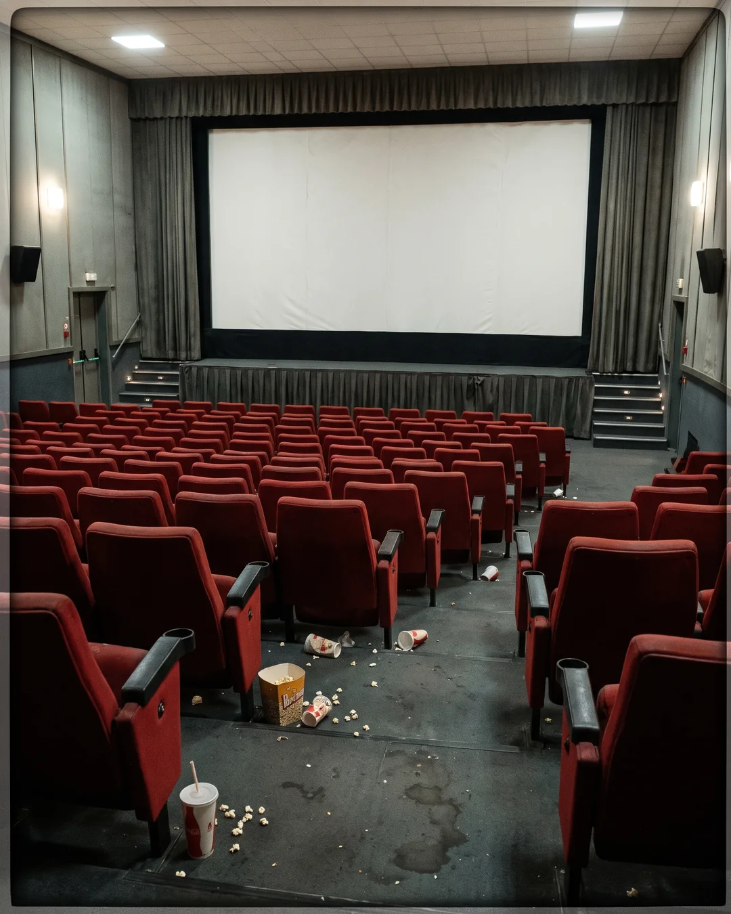

Case #23 · Cinema
About this case
Case #23 is closed. It was the daily case for November 23, 2026 and its theme was Cinema. The detectives of that day had two challenges: five images to judge as real photographs or AI-made pictures, and five one-sentence claims to judge as facts or fakes.
- AI-generated images: 2 of 5
- Fake claims: 3 of 5
Below you will find every answer. Each AI-generated image comes with the prompt that produced it, and each claim with the truth behind it and the details worth remembering, so you can check what you missed.
One of the fakes: “Alfred Hitchcock made a horror film with no picture, meant to be shown in theaters kept completely dark.” The truth: There is no record of any such work; Hitchcock was above all a master of visual storytelling.
Want to sharpen your eye? Read our guide to spotting AI images or our guide to spotting fake news, then play today's case.
Images
-
Image 1

AI
The suspect's confession
An empty movie theater with the lights on after the show, slightly worn red seats, cups and popcorn dropped on the floor and the blank screen at the back; flat light and muted colors.
-
Image 2
REAL
Real photograph
-
Image 3

REAL
Real photograph
-
Image 4
REAL
Real photograph
-
Image 5

AI
The suspect's confession
A movie theater lobby with the popcorn counter, popcorn buckets on the bar and an employee with his back turned serving; warm light mixed with fluorescents and out-of-focus signs.
Fact or Fake
-
Claim 1
FAKE “Alfred Hitchcock made a horror film with no picture, meant to be shown in theaters kept completely dark.”
There is no record of any such work; Hitchcock was above all a master of visual storytelling.
- The myth may come from Wait Until Dark (1967), directed by Terence Young.
- Theaters turned off every light for its final minutes.
-
Claim 2
FAKE “Finland has adopted as an official language a constructed language that was created for a film.”
Finland's official languages are only Finnish and Swedish, plus regional recognition of the Sami languages.
- Tolkien drew on Finnish to create Quenya, heard in The Lord of the Rings.
- Quenya is not official in any country.
-
Claim 3
FACT “The first Paranormal Activity had a budget of just $15,000 and grossed more than $193 million at the box office.”
Directed by Oren Peli, the 2007 original was shot in his own house in about a week with a home video camera.
- Viral marketing made it one of the most profitable films ever.
-
Claim 4
FAKE “In 2021, a French short film made entirely by artificial intelligence won the jury prize at the Lyon Independent Film Festival.”
There is no record of this; in 2021 AI video generation was still too primitive to make a short that could win a jury prize.
- AI film festivals do exist today, such as the AI International Film Festival.
-
Claim 5
FACT “The first animated feature film in history was made in Argentina.”
Quirino Cristiani wrote, animated and directed El apóstol in 1917, two decades before Disney's Snow White.
- It was a 70-minute silent political satire made with cardboard cutouts.
- All copies were lost in a fire in 1926.